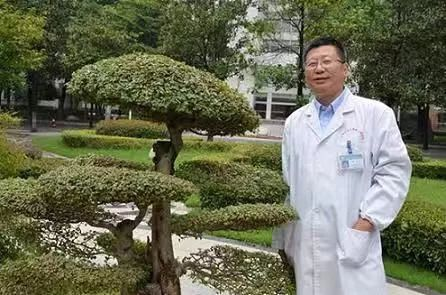
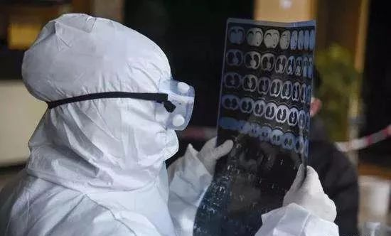

平均每天3.1篇文章 中国科学界“战疫”
原文链接 备份链接 *************▲*************（数据整理：南方周末记者周小铃、南方周末实习生叶梓。时间截止于2月5日） 全文共4521字，阅读大约需要10分钟。 自1月15日至2月5日，中国学者参与发表的新 …
**记者/魏晓涵
**
编辑/石爱华 宋建华

*同济医学院法医学系教授刘良*
1月9日，新冠肺炎出现首个死亡病例，截至2月14日13时，因新冠肺炎所致的死亡人数已达1381人。
“目前，一例病理解剖都没有”，同济医学院法医学系教授刘良认为，对新冠肺炎死者尸体进行病理解剖，可以为临床治疗和诊断提供有力支持。
刘良从事病理研究三十余年，新冠肺炎疫情爆发后，他所在的团队向湖北省政府提交了紧急报告，强调了尸检的重要性和可行性，并得到了肯定的批复。
现实操作中，武汉市许多个定点医院对病理解剖表达了积极态度，却无法提供解剖场地等支持，刘良分析，由于医院没有收到正式文件，又担心解剖风险，病理解剖的事情只能暂时搁浅。
病理研究为什么如此重要？为什么在新冠肺炎死亡病例出现一个多月后，研究无法开展？已有的冠状病毒病理研究对这次疫情有何作用？针对以上问题，深一度对话了刘良。

新冠肺炎患者的CT影像图，肺部出现毛玻璃样

病理搞不清楚，治疗就会盲目
深一度：在新冠肺炎的诊疗中，病理检查的现状怎样？
刘良：病理上没有完整的、系统的东西，可能有个别人做了穿刺或者活检，但都是很局限的，它不能代表整体，基本上是空白。现在死亡人数过千，（这种缺失）按理说是不应该的。
深一度：病理学检查为何重要？
刘良：打个比方，CT检查就像卫星，如果地球上发生了一场战争，卫星只能看个大概。最核心的是要有人到前沿阵地去，看见敌人死了多少，我们的防御出了什么问题？敌人用什么武器，我们武器是什么样子？像侦察兵一样，指导后方打仗。病理研究就干这事儿。
CT显示，（新冠肺炎患者）肺上出现毛玻璃样。我们要搞清楚是什么导致肺出现毛玻璃样，是水肿？出血？感染？纤维化？里面起反应的是中性白细胞、单核细胞还是淋巴细胞？搞不清楚的话，治疗上就会盲目，一片乱杀。
病理研究也关注传染途径的问题。比如粪口传染， 肠道里的病毒到底分布在什么地方？口腔、食道、胃、十二指肠还是结肠？不同情况的病人治疗也完全不一样。
以后，如果要对新冠肺炎做实验，设计研究模型，也需要病理研究的结果。
深一度：如果可以，新冠肺炎的病理研究可以做到什么程度？
刘良：我们需要对新冠肺炎的死者遗体进行解剖，取样，然后做切片，可以研究病毒在人体的分布状态，以及身体哪个部位对病毒有反应。
具体到病毒对哪个组织、哪个器官，器官的哪个局部、哪些细胞损害更多。病毒攻击的方向、靶点在哪里，我们就要对这个靶点做研究，做一些干预、防御。
（这个缺失）对抢救治疗有延误，对将来的研究也有影响，所以很着急。
深一度：病理研究能为新冠肺炎的治疗提供什么支持？
刘良：肯定能提供支持。以往，有很多临床不清楚的问题，都能在病理医生的解剖结果中找到答案，像判官一样。
新冠病毒很奇怪，远离气管，在肺的周围比较多。所以取咽拭子的时候，病人要深深的把肺周围的病毒咳出来。
为什么是这样的？目前还不知道。我们需要在显微镜下去验证，肺的哪个部位病变更明显，是靠近中间，还是外围？具体是什么样的病变，哪一块的炎性细胞比较多？
有了这些病理研究，就会去思考，“为什么病毒会到这个地方去？”假设病毒在肺的外围多，那么它可能不是从呼吸道传入的，而是从消化道进入，跟着血液循环到边缘的毛细血管，然后繁殖，从外向内对肺部进行攻击。
如果是这样，可能需要处理的就是血液上的问题，而不仅是针对肺的雾化，治疗的重点和方向就不一样了。
另外，这个病毒对不同的人作用不一样，病例积累得越多，对临床治疗越有用。如果有病理解剖的知识，会更方便。

北京地坛医院建有生物安全保护Ⅲ级(BSL3)尸体解剖实验室, 曾对SARS死亡病例进行病理解剖和发病机制研究
达标解剖室很少，但不是没办法
深一度：新冠肺炎死亡病例的病理解剖，现状如何？
刘良：目前，针对新冠肺炎的病理解剖一例都没有。据我所知（武汉这边）只有我们的团队在跟进，我们有一组人，其中做法医鉴定的人比较多。
对传染病人遗体的解剖，防止病毒传播，国内有一套标准。目前国内达到传染病解剖标准的解剖室很少，北京地坛医院有一家，曾用于SARS研究，其他地方都没有，我们不可能把遗体从武汉运到北京。但不能说没有就不做，还是要想办法。
我们以前做过非典、艾滋病（传染性疾病）的解剖，没有很好的解剖环境，也没有发生过什么问题。
深一度：没有标准的传染病解剖室，要在哪里进行？
刘良：这是一种特殊的解剖模式，需要在一个小的（空间）进行，比如尸体袋。（解剖完的遗体）缝合好，袋子拉上去就可以了，技术上不是问题，可以在医院就地做。
空地、室外都可以做，或者一个杂物间、一个角落里面都可以，做完进行消杀，安全性上没什么问题。
深一度：病人身上携带的病毒会不会二次污染或扩散？
刘良：说起来，新冠肺炎传染性强，好像挺可怕。普通人、包括很多专业人士都不懂，觉得太危险。但是我们之前做了很多（其他传染病人的病理解剖），从没发生过人员感染，也没造成环境污染。做过的人知道怎么防护。
比如在尸体袋里面做解剖，之后直接火化，没有太大问题。
深一度：国内外有可供借鉴的经验吗？
刘良：国外对（传染疾病）解剖和尸检比较积极。其实，在非典时期，国内出现死亡病例十几天后，就开始做病理解剖了。
实际上，我们可以把非典的模式重复一下。当时的解剖防护措施就很普通，现在的防护比以前更好。最近，有做过非典病人尸体解剖的人给我留言，他们觉得没什么可怕的。
深一度：相比非典，新冠肺炎的病理解剖有什么不同？
刘良：这次需要更细一些，主要是防止次生灾害。操作上需要更稳，更慢。
比如，可以在一个更小的空间里操作。要准备很多毛巾吸掉血水，袋子要防水，确保血水不会流到土壤里，或排到下水道，不让粉尘漏在外面。
对于实施解剖的人，要穿好防护服。相比普通医护人员我们防护措施更严格。比如，医护人员戴两层手套，我们戴三层，口罩也更多一点。
在操作上，我们列了程序，有很多讲究，比普通尸检更严谨，为了避免操作层面出现遗漏，有专人在旁边进行操作步骤的提示，做一步，打一个勾，做缝合时，以前是不同部位同时进行，现在要每个部位单独进行。
深一度：为新冠肺炎病例解剖，您的团队做了哪些准备？
刘良：我们在1月23日就做好了预案，包括谁上，谁在外面，做完了以后要自我隔离等等，也做过模拟，像演习一样。
我们以前的规定是老同志、党员先上，但这次考虑到新冠病毒“欺负”老同志，所以安排老同志进场指挥，中青年骨干上解剖台，都是很有经验的人。

武汉抗疫一线的医生正在对CT结果进行诊断
没有正式文件，病理解剖落地难
深一度：在我国做病理解剖，有什么要求？
刘良：从法律来讲，我国《传染病防治法》里面提到，病患尸体可以来做病理解剖。前提要通过家属同意，解剖之后，要做好环境的防护、个人的防护。（这个过程）过五关斩六将，层层都需把关。
首先需要死者家属的同意，签一个协议告知；第二需要有一个相对合适的场地，不让病毒扩散，有人提出需要在负压（空间）下操作，但解剖需要的防护、防止次生灾害的措施我们都有，不需要担心；第三是做尸检人员要有资质。
深一度：其实《传染病防治法》里提到，做传染病的病理解剖，可以不征得家属同意？
刘良：是可以。但我们从人性化角度出发，征得家属同意，这是对死者和家属的尊重。
就目前状况来说，讲清楚道理，大多数患者家属都是愿意的，这是个意义重大的事情。
深一度：既然次生危害能有效预防，为什么目前还没有对新冠肺炎死亡病例进行解剖尸检？
刘良：1月24日我们给湖北省政府写了一个紧急报告，强调了尸检的重要性和可行性。29号收到省里批复，意思是可以做，但没有作为文件向下传达。
后来我们去联系各个医院，所有医生都说这个好，但涉及到具体方案的时候，医院就要请示、汇报、要文件、批文。
现在，可能省、市的医院没接到正式下达的文件，在观望等待，暂时没有启动这个事情。现在这个局面，我也是万般无奈，具体怎么做，没有方向。
深一度：医院的顾虑是什么？
刘良：医院对于解剖场地有所顾虑。
医院态度很好，也很热情，但涉及解剖场地时，医院通常回复说：“第一没地方，没房间解剖，第二是没有正式的政府文件用来执行”。
我给医院看过政府的批复，但医院要正式文件。（单凭）一个批复， 没人敢负责，问题的症结可能在这个地方。
深一度：除了在医院就地做病理解剖，还有其他的选择吗？
刘良：我们觉得把尸体运到武汉其他解剖间，不够负压标准，过程中造成的污染可能更厉害。也可以到殡仪馆做，但又会涉及到民政等其他部门，还有遗体运输工的安全问题，环节越多就更麻烦。
深一度：病理解剖的对象，有一定的选择标准吗？
刘良：我们会考虑他临床上的经过，比如生前有无其他疾病，像心脏病、高血压、糖尿病等等，这些在他的死因中起到什么作用。
最重点还是研究肺，这个病毒对于人的呼吸功能干扰很大，影响肺的氧气交换过程，是重点要研究的东西。
深一度：完成一例病理研究，需要花费多长时间？
刘良：一般的尸检，要二三十天出结果。但新冠肺炎是很着急的，不只一种（人体组织切片）染色要上，各种都要用到，这样提取的信息更多，对临床指导意义更大。如果能做，快一点，特事特办，九、十天就能出结果。
深一度：之前对冠状病毒患者的病理研究，比如SARS，或者中东呼吸综合征，积累下来的经验可以用于新冠病毒的治疗吗？
刘良：说不清楚。我们到现在不知道肺炎的病变是怎样的，和原来的有什么异同。这个预测不了。
深一度：现在还在做什么努力？
刘良：我现在还在走官方途径，很多朋友在跟不同的国家机构和部门联系，反映这件事。 我觉得（病理解剖）终归要做的，早一点至少可以多救几个人吧。
【反侵权公告】本文由北京青年报与腾讯新闻联合出品，未经授权，不得转载。


送别李文亮医生：愿天堂没有病毒| 深度报道

鄂A牌车30小时归乡记 | 深度报道

一个武汉红十字会志愿者的自述 | 深度报道


原文链接 备份链接 *************▲*************（数据整理：南方周末记者周小铃、南方周末实习生叶梓。时间截止于2月5日） 全文共4521字，阅读大约需要10分钟。 自1月15日至2月5日，中国学者参与发表的新 …
原文链接 备份链接 湖北省新冠肺炎疫情防控指挥部13日21时召开新闻发布会，邀请中央指导组医疗救治组专家、北京朝阳医院副院长童朝晖、广州支援武汉协和医院医疗队队长、广州医科大学附属第一医院副院长张挪富、武汉金银潭医院院长张定宇等介绍武汉 …
原文链接 备份链接 _ 基层防控中筛查方式是否改变，需要传染病学专家与临床专家们在对这一论文进行评议之后，与政策制定者综合考量 _ 文 | 《财经》记者 赵天宇 孙爱民 编辑 | 王小 2020年2月9日，国家呼吸系统疾病临床医学研究中 …
原文链接 备份链接 _ 新冠肺炎核酸检测阳性比率低，与病情发展阶段、采集流程是否规范、试剂盒的质量相关。为减少可能的“漏诊”，专家建议对不同厂商的试剂盒进行系统对比 _ 文 |《财经》记者 孙爱民 言清 王小 编辑 | 王小 近日在湖北 …
原文链接 备份链接 刘为勇是我的大学同学。如今他是华中科技大学同济医学院附属同济医院检验科一员，发生疫情以来，他一直在抗击新冠病毒的第一线。 他是新冠病毒的最早鉴定者之一。在 1 月 4 日，他就在大学群里提醒大家不要去菜市场买野味，因为 …